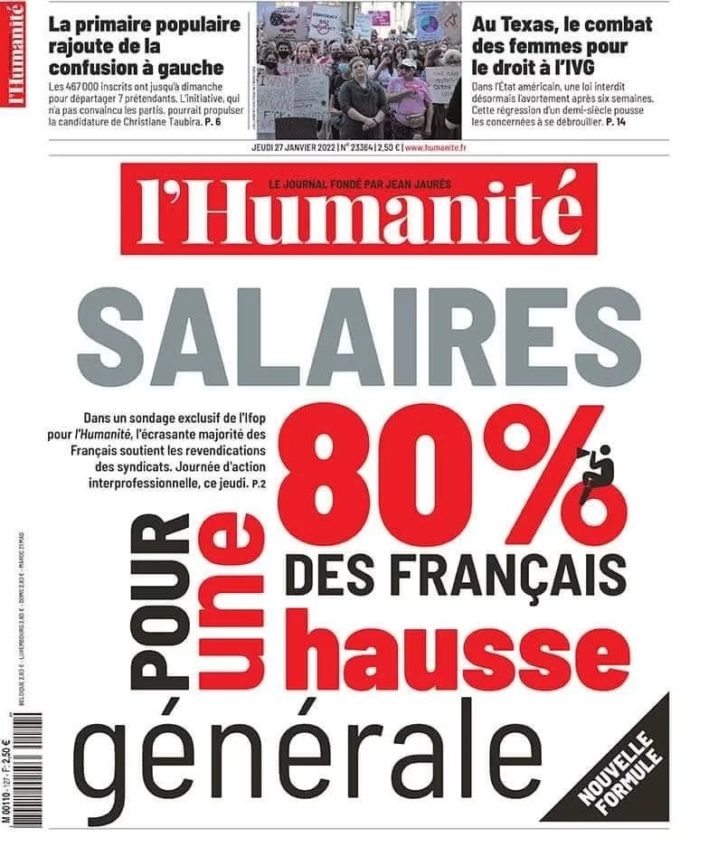

Publication relayée par le PCF 79
Fabien Roussel défend une hausse générale des salaires
Date de mise à jour indiquée par Facebook · 27 janvier 2022
Texte de la publication · Fabien Roussel
80% des Français sont favorables à une hausse des salaires.
Ils ont raison ! Alors que les patrons du CAC 40 se sont augmentés de 30%, les salariés tirent la langue.
Je propose un SMIC à 1900 euros brut (1500 net) et une augmentation générale des salaires.

Sources
Fabien Roussel · publication relayée par le PCF 79 · bibliothèque Facebook · AR-0002-FB-01981
À lire aussi · Salaires. La CGT 79 appelle à se mobiliser à Thouars et à Niort